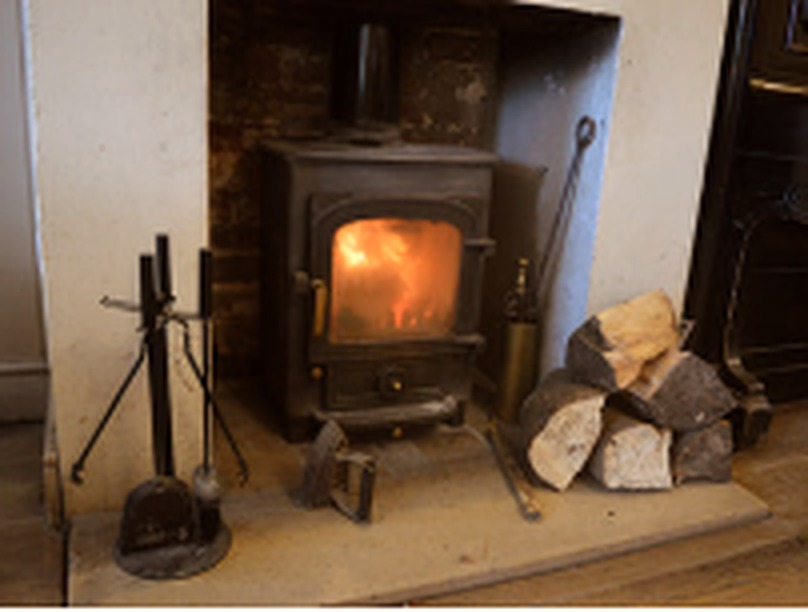
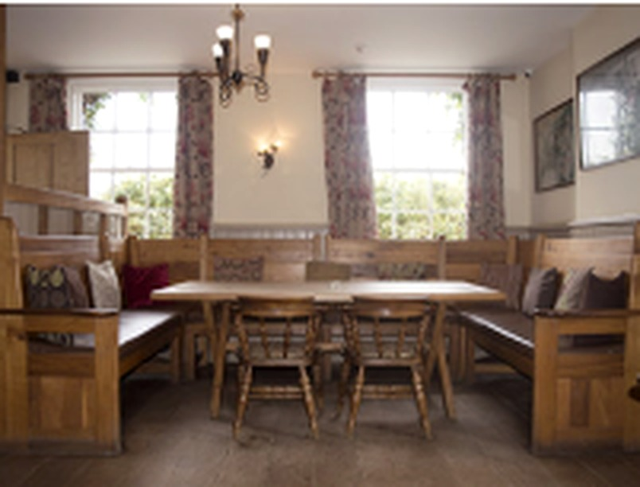
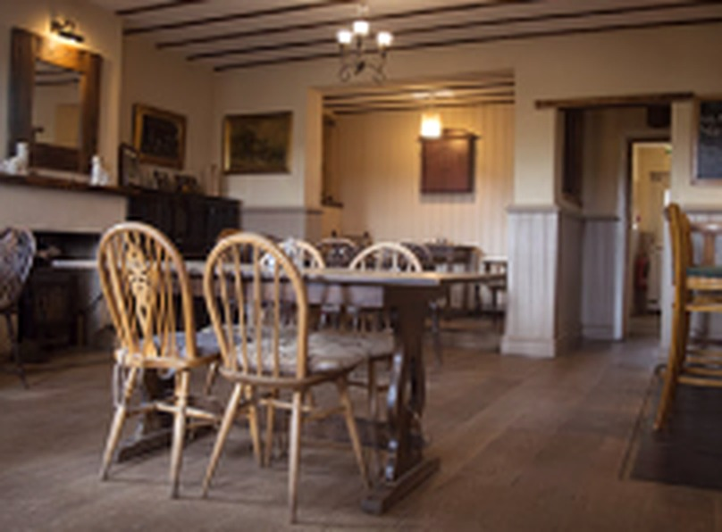
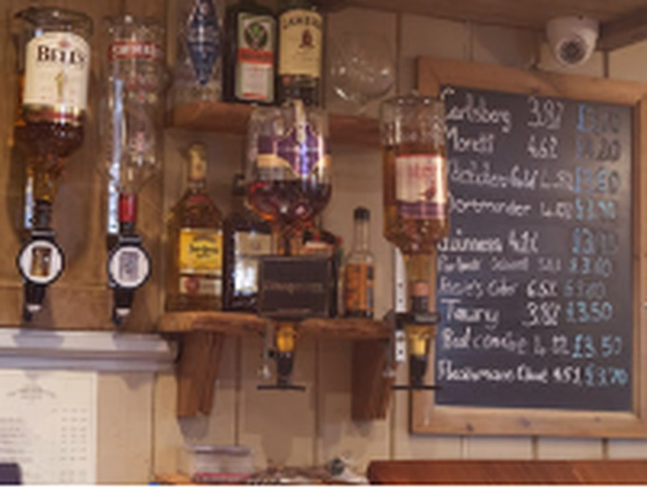

Inside The Oak
Gallery
Take a look around The Oak at Dewlish — our traditional pub, cosy interiors and guest accommodation.
The Oak at Dewlish
A proper Dorset village pub
From fireside drinks and relaxed meals to comfortable rooms and traditional pub character, explore a selection of photographs from around The Oak.









Like what you see?
Join us for a meal, a drink or a relaxing stay in Dorset.